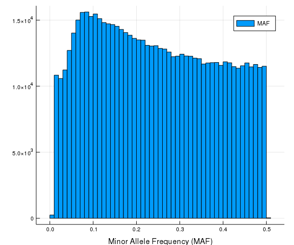
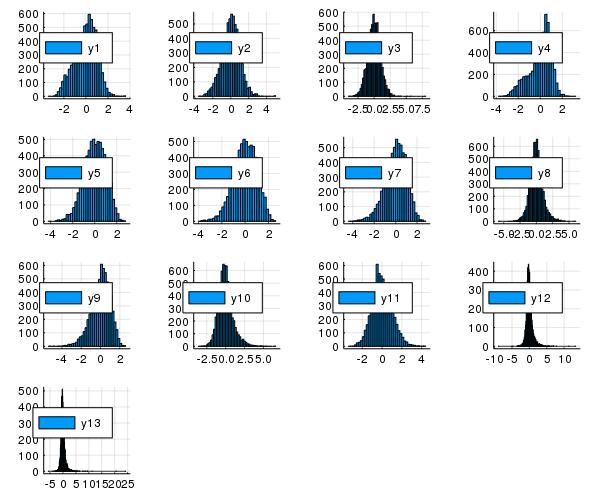

Heritability Analysis
As an application of the variance component model, this note demonstrates the workflow for heritability analysis in genetics, using a sample data set cg10k with 6,670 individuals and 630,860 SNPs. Person IDs and phenotype names are masked for privacy. cg10k.bed, cg10k.bim, and cg10k.fam is a set of Plink files in binary format. cg10k_traits.txt contains 13 phenotypes of the 6,670 individuals.
;ls cg10k.bed cg10k.bim cg10k.fam cg10k_traits.txtcg10k.bed
cg10k.bim
cg10k.fam
cg10k_traits.txtMachine information:
versioninfo()Julia Version 1.1.0
Commit 80516ca202 (2019-01-21 21:24 UTC)
Platform Info:
OS: macOS (x86_64-apple-darwin14.5.0)
CPU: Intel(R) Core(TM) i5-6267U CPU @ 2.90GHz
WORD_SIZE: 64
LIBM: libopenlibm
LLVM: libLLVM-6.0.1 (ORCJIT, skylake)Read in binary SNP data
We will use the SnpArrays.jl package to read in binary SNP data and compute the empirical kinship matrix. The package has not yet been registered and must be installed using the repository location. Start julia and use the ] key to switch to the package manager REPL
(v0.7) pkg> add https://github.com/OpenMendel/SnpArrays.jl.git#juliav0.7Use the backspace key to return to the Julia REPL.
using SnpArrays# read in genotype data from Plink binary file (~50 secs on my laptop)
@time cg10k = SnpArray("cg10k.bed") 0.030779 seconds (54 allocations: 19.467 MiB, 28.08% gc time)
6670×630860 SnpArray:
0x02 0x02 0x03 0x03 0x02 0x03 … 0x02 0x03 0x03 0x03 0x03 0x03
0x03 0x03 0x02 0x03 0x02 0x03 0x03 0x02 0x02 0x03 0x02 0x01
0x03 0x03 0x02 0x03 0x02 0x03 0x03 0x03 0x03 0x03 0x03 0x03
0x03 0x03 0x03 0x03 0x03 0x03 0x03 0x02 0x02 0x02 0x02 0x03
0x03 0x03 0x03 0x03 0x03 0x03 0x03 0x03 0x03 0x03 0x03 0x02
0x02 0x02 0x03 0x03 0x02 0x03 … 0x03 0x03 0x03 0x03 0x03 0x03
0x00 0x00 0x03 0x03 0x00 0x03 0x03 0x02 0x03 0x03 0x03 0x03
0x03 0x03 0x03 0x03 0x03 0x02 0x03 0x03 0x03 0x03 0x03 0x02
0x03 0x03 0x02 0x03 0x02 0x03 0x02 0x02 0x03 0x03 0x03 0x03
0x03 0x03 0x03 0x00 0x03 0x03 0x02 0x02 0x03 0x03 0x02 0x03
0x03 0x03 0x02 0x03 0x02 0x02 … 0x02 0x03 0x03 0x03 0x03 0x03
0x02 0x02 0x03 0x03 0x02 0x03 0x02 0x03 0x03 0x03 0x03 0x02
0x03 0x03 0x03 0x00 0x03 0x03 0x03 0x03 0x03 0x03 0x03 0x02
⋮ ⋮ ⋱ ⋮
0x02 0x02 0x03 0x03 0x02 0x03 0x03 0x02 0x03 0x03 0x02 0x02
0x02 0x02 0x02 0x03 0x00 0x02 0x02 0x03 0x03 0x03 0x02 0x03
0x03 0x03 0x02 0x02 0x02 0x03 … 0x03 0x02 0x03 0x03 0x02 0x03
0x02 0x02 0x03 0x03 0x02 0x03 0x03 0x02 0x03 0x03 0x03 0x02
0x03 0x03 0x03 0x02 0x03 0x02 0x03 0x03 0x03 0x03 0x02 0x03
0x03 0x03 0x01 0x02 0x02 0x01 0x03 0x00 0x00 0x02 0x00 0x02
0x03 0x03 0x03 0x02 0x03 0x03 0x03 0x03 0x03 0x03 0x03 0x02
0x03 0x03 0x02 0x02 0x02 0x03 … 0x00 0x03 0x03 0x03 0x03 0x03
0x03 0x03 0x03 0x02 0x02 0x03 0x02 0x02 0x02 0x02 0x02 0x03
0x03 0x03 0x03 0x02 0x03 0x02 0x02 0x03 0x02 0x03 0x03 0x02
0x02 0x02 0x03 0x03 0x02 0x03 0x03 0x03 0x01 0x03 0x03 0x03
0x03 0x03 0x03 0x03 0x03 0x02 0x03 0x00 0x03 0x03 0x03 0x03Summary statistics of SNP data
people, snps = size(cg10k)(6670, 630860)The positions of the missing data are evaluated by
mp = missingpos(cg10k)6670×630860 SparseArrays.SparseMatrixCSC{Bool,Int32} with 5524131 stored entries:
[5688 , 1] = true
[6445 , 1] = true
[109 , 3] = true
[189 , 3] = true
[216 , 3] = true
[254 , 3] = true
[331 , 3] = true
[522 , 3] = true
[525 , 3] = true
[597 , 3] = true
[619 , 3] = true
[672 , 3] = true
⋮
[4929 , 630860] = true
[5594 , 630860] = true
[5650 , 630860] = true
[5780 , 630860] = true
[5854 , 630860] = true
[5867 , 630860] = true
[6084 , 630860] = true
[6175 , 630860] = true
[6178 , 630860] = true
[6239 , 630860] = true
[6478 , 630860] = true
[6511 , 630860] = trueThe number of missing data values in each column can be evaluated as
missings_by_snp = sum(mp, dims=1)1×630860 Array{Int64,2}:
2 0 132 77 0 27 2 2 6 27 2 … 6 4 5 11 0 0 4 29 0 5 43Minor allele frequencies (MAF) for each SNP.
maf_cg10k = maf(cg10k)630860-element Array{Float64,1}:
0.1699160167966407
0.17098950524737633
0.11402569593147749
0.2686940694676172
0.21926536731634183
0.23934969140448592
0.19061187762447507
0.20200959808038388
0.027160864345738278
0.2997139846454915
0.24625074985003004
0.05555555555555558
0.3659067046647667
⋮
0.22547254725472543
0.4035864345738295
0.20799579957995795
0.44801200300075017
0.2954647845021775
0.14265367316341826
0.1709145427286357
0.2814281428142814
0.06113537117903933
0.052473763118440764
0.13930982745686427
0.1324128564961521# 5 number summary and average MAF (minor allele frequencies)
using Statistics
Statistics.quantile(maf_cg10k, [0.0 .25 .5 .75 1.0]), mean(maf_cg10k)([0.00841726 0.124063 … 0.364253 0.5], 0.24536516625042462)#using Pkg
#pkg "add Plots"
#pkg"add PyPlot"
using Plots
gr(size=(600,500), html_output_format=:png)
histogram(maf_cg10k, xlab = "Minor Allele Frequency (MAF)", label = "MAF")
# proportion of missing genotypes
sum(missings_by_snp) / length(cg10k)0.0013128198764010824# proportion of rare SNPs with maf < 0.05
count(!iszero, maf_cg10k .< 0.05) / length(maf_cg10k)0.07228069619249913Empirical kinship matrix
We estimate empirical kinship based on all SNPs by the genetic relation matrix (GRM). Missing genotypes are imputed on the fly by drawing according to the minor allele frequencies.
## GRM using SNPs with maf > 0.01 (default) (~10 mins on my laptop)
using Random
Random.seed!(123)
@time Φgrm = grm(cg10k; method = :GRM)568.176660 seconds (2.91 M allocations: 494.981 MiB, 0.40% gc time)
6670×6670 Array{Float64,2}:
0.502735 0.00328112 -6.79435e-5 … -6.09591e-5 -0.00277687
0.00328112 0.49807 -0.00195548 0.000884994 0.00341591
-6.79435e-5 -0.00195548 0.492348 0.000198191 -0.000337529
0.00087876 -0.00322605 -0.00192088 -0.00235314 -0.00124267
-5.03227e-5 -0.00352498 0.00184588 0.00219109 -0.00163189
0.00203199 0.000597697 0.00251237 … 0.00088428 2.21226e-5
0.000560862 0.00244517 -0.00183233 0.00120214 -0.00120686
-0.000656949 0.00322249 -0.00101472 0.00355832 -0.000240444
-0.00103874 -0.00125164 -0.000599731 0.00176492 0.00176928
-0.00137058 0.00209596 0.000146711 -0.0014453 -0.00103066
-0.00209312 0.000140721 -0.000442031 … -0.000214963 -0.00107391
0.000933587 0.00168842 0.00185731 -0.000787908 -0.00311063
0.000334572 -0.000886623 0.00304182 0.000752285 -0.00123334
⋮ ⋱
0.00298109 0.00121739 0.00102822 9.66935e-6 0.00306953
-0.00209728 0.00271452 -0.00182325 -0.00108139 0.00366901
0.000549425 -0.00244419 -0.00301368 … -0.000631961 0.00215641
-0.00423362 -0.00208073 -0.00107904 -0.000619315 -0.000593852
-0.00326697 -0.000769552 0.00310511 0.000520658 -0.000113441
0.000430563 -0.0020236 0.00265425 -0.00635493 -0.00520252
0.00218746 0.000798767 -0.00105684 -0.000918245 -0.00061484
-0.00230525 -0.000101149 0.000117936 … 0.000879829 -0.00233479
-0.00201305 0.00233864 -0.00134496 0.00197044 -0.000486275
-0.000990534 -0.000924159 -9.12302e-5 0.00122311 -0.00298296
-6.09591e-5 0.000884994 0.000198191 0.499289 0.000481492
-0.00277687 0.00341591 -0.000337529 0.000481492 0.499799Phenotypes
Read in the phenotype data and compute descriptive statistics.
#using Pkg
#pkg"add CSV DataFrames"
#using CSV, DataFrames
cg10k_trait = CSV.File("cg10k_traits.txt";
delim = ' ') |> DataFrame
names!(cg10k_trait, [:FID; :IID; :Trait1; :Trait2; :Trait3; :Trait4; :Trait5; :Trait6;
:Trait7; :Trait8; :Trait9; :Trait10; :Trait11; :Trait12; :Trait13])
# do not display FID and IID for privacy
cg10k_trait[:, 3:end]<table class="data-frame"><thead><tr><th></th><th>Trait1</th><th>Trait2</th><th>Trait3</th><th>Trait4</th><th>Trait5</th><th>Trait6</th><th>Trait7</th><th>Trait8</th><th>Trait9</th><th>Trait10</th><th>Trait11</th><th>Trait12</th><th>Trait13</th></tr><tr><th></th><th>Float64⍰</th><th>Float64⍰</th><th>Float64⍰</th><th>Float64⍰</th><th>Float64⍰</th><th>Float64⍰</th><th>Float64⍰</th><th>Float64⍰</th><th>Float64⍰</th><th>Float64⍰</th><th>Float64⍰</th><th>Float64⍰</th><th>Float64⍰</th></tr></thead><tbody><p>6,670 rows × 13 columns</p><tr><th>1</th><td>-1.81573</td><td>-0.94615</td><td>1.11363</td><td>-2.09867</td><td>0.744417</td><td>0.00139172</td><td>0.934732</td><td>-1.22677</td><td>1.11608</td><td>-0.443628</td><td>0.824466</td><td>-1.02853</td><td>-0.394049</td></tr><tr><th>2</th><td>-1.2444</td><td>0.10966</td><td>0.467119</td><td>-1.62131</td><td>1.05668</td><td>0.978947</td><td>1.00015</td><td>0.324874</td><td>1.16232</td><td>2.69227</td><td>3.08264</td><td>1.09065</td><td>0.0256616</td></tr><tr><th>3</th><td>1.45567</td><td>1.53867</td><td>1.09403</td><td>0.586655</td><td>-0.327965</td><td>-0.303377</td><td>-0.0334355</td><td>-0.464463</td><td>-0.33194</td><td>-0.486839</td><td>-1.10649</td><td>-1.42016</td><td>-0.687463</td></tr><tr><th>4</th><td>-0.768809</td><td>0.513491</td><td>0.244263</td><td>-1.3174</td><td>1.19394</td><td>1.17344</td><td>1.08737</td><td>0.536023</td><td>0.802759</td><td>0.234159</td><td>0.394175</td><td>-0.767366</td><td>0.0635386</td></tr><tr><th>5</th><td>-0.264415</td><td>-0.34824</td><td>-0.0239065</td><td>0.00473916</td><td>1.25619</td><td>1.20389</td><td>1.29801</td><td>0.310114</td><td>0.62616</td><td>0.899289</td><td>0.549968</td><td>0.540688</td><td>0.179675</td></tr><tr><th>6</th><td>-1.37617</td><td>-1.47192</td><td>0.29118</td><td>-0.803111</td><td>-0.26424</td><td>-0.260573</td><td>-0.165372</td><td>-0.219257</td><td>1.04702</td><td>-0.0985816</td><td>0.947393</td><td>0.594015</td><td>0.245407</td></tr><tr><th>7</th><td>0.100942</td><td>-0.191616</td><td>-0.567421</td><td>0.378571</td><td>-0.246656</td><td>-0.608811</td><td>0.189081</td><td>-1.27078</td><td>-0.452476</td><td>0.702563</td><td>0.332636</td><td>0.00269165</td><td>0.317117</td></tr><tr><th>8</th><td>-0.319818</td><td>1.35774</td><td>0.81869</td><td>-1.15566</td><td>0.634484</td><td>0.291462</td><td>0.933324</td><td>-0.741083</td><td>0.647478</td><td>-0.970878</td><td>0.220861</td><td>0.852512</td><td>-0.225905</td></tr><tr><th>9</th><td>-0.288334</td><td>0.566083</td><td>0.254958</td><td>-0.652578</td><td>0.668922</td><td>0.978309</td><td>0.122863</td><td>1.47909</td><td>0.0672132</td><td>0.0795904</td><td>0.167532</td><td>0.246916</td><td>0.539933</td></tr><tr><th>10</th><td>-1.1576</td><td>-0.781199</td><td>-0.595808</td><td>-1.00555</td><td>0.789829</td><td>0.571058</td><td>0.951304</td><td>-0.295963</td><td>0.99042</td><td>0.561309</td><td>0.7331</td><td>-1.73468</td><td>-1.35278</td></tr><tr><th>11</th><td>0.740569</td><td>1.40874</td><td>0.73469</td><td>0.0208323</td><td>-0.337441</td><td>-0.458304</td><td>-0.142583</td><td>-0.580392</td><td>-0.684685</td><td>-0.00785381</td><td>-0.712244</td><td>-0.313346</td><td>-0.345419</td></tr><tr><th>12</th><td>-0.675892</td><td>0.279893</td><td>0.267916</td><td>-1.04104</td><td>0.910742</td><td>0.866028</td><td>1.07414</td><td>0.0381751</td><td>0.766355</td><td>-0.340118</td><td>-0.809014</td><td>0.548522</td><td>-0.0201829</td></tr><tr><th>13</th><td>-0.79541</td><td>-0.69999</td><td>0.39913</td><td>-0.510476</td><td>1.51552</td><td>1.28743</td><td>1.53772</td><td>0.133989</td><td>1.02026</td><td>0.499019</td><td>-0.369483</td><td>-1.10153</td><td>-0.598132</td></tr><tr><th>14</th><td>-0.193483</td><td>-0.286021</td><td>-0.691494</td><td>0.0131582</td><td>1.52337</td><td>1.40106</td><td>1.53115</td><td>0.333066</td><td>1.04372</td><td>0.163207</td><td>-0.422884</td><td>-0.383528</td><td>-0.489222</td></tr><tr><th>15</th><td>0.151246</td><td>2.09185</td><td>2.038</td><td>-1.12475</td><td>1.66557</td><td>1.62536</td><td>1.58751</td><td>0.635852</td><td>0.842578</td><td>0.450762</td><td>-1.39479</td><td>-0.560984</td><td>0.28935</td></tr><tr><th>16</th><td>-0.464609</td><td>0.361277</td><td>1.23277</td><td>-0.826034</td><td>1.43475</td><td>1.74452</td><td>0.211097</td><td>2.64816</td><td>1.02511</td><td>0.119757</td><td>0.0596832</td><td>-0.631232</td><td>-0.207879</td></tr><tr><th>17</th><td>-0.732977</td><td>-0.526223</td><td>0.616579</td><td>-0.55448</td><td>0.947485</td><td>0.936833</td><td>0.972517</td><td>0.290251</td><td>1.01285</td><td>0.516207</td><td>-0.0300689</td><td>0.878732</td><td>0.450255</td></tr><tr><th>18</th><td>-0.167326</td><td>0.175327</td><td>0.287468</td><td>-0.402653</td><td>0.551182</td><td>0.522205</td><td>0.436838</td><td>0.299565</td><td>0.58311</td><td>-0.704416</td><td>-0.73081</td><td>-1.95141</td><td>-0.933505</td></tr><tr><th>19</th><td>1.41159</td><td>1.78722</td><td>0.843976</td><td>0.481278</td><td>-0.0887674</td><td>-0.499578</td><td>0.304196</td><td>-1.23884</td><td>-0.153476</td><td>-0.870486</td><td>0.0955473</td><td>-0.983708</td><td>-0.356345</td></tr><tr><th>20</th><td>-1.42997</td><td>-0.490147</td><td>0.27273</td><td>-1.6103</td><td>0.990788</td><td>0.711688</td><td>1.18858</td><td>-0.371229</td><td>1.24703</td><td>-0.0389162</td><td>0.883496</td><td>2.58988</td><td>3.3354</td></tr><tr><th>21</th><td>-0.147247</td><td>0.123284</td><td>0.617549</td><td>-0.187131</td><td>0.256438</td><td>0.17795</td><td>0.412612</td><td>-0.244809</td><td>0.0947625</td><td>0.723017</td><td>-0.683948</td><td>0.0873751</td><td>-0.26221</td></tr><tr><th>22</th><td>-0.187113</td><td>-0.270777</td><td>-1.01557</td><td>0.0602851</td><td>0.27242</td><td>0.869133</td><td>-0.657519</td><td>2.32389</td><td>-0.999936</td><td>1.44672</td><td>0.971158</td><td>-0.358748</td><td>-0.439658</td></tr><tr><th>23</th><td>-1.82434</td><td>-0.93348</td><td>1.29474</td><td>-1.94545</td><td>0.335847</td><td>0.359202</td><td>0.513653</td><td>-0.0731977</td><td>1.57139</td><td>1.53329</td><td>1.82077</td><td>2.2274</td><td>1.50063</td></tr><tr><th>24</th><td>-2.29344</td><td>-2.49162</td><td>0.40384</td><td>-2.36488</td><td>1.41053</td><td>1.42244</td><td>1.17024</td><td>0.844767</td><td>1.79027</td><td>0.648182</td><td>-0.0857231</td><td>-1.0279</td><td>0.491288</td></tr><tr><th>25</th><td>-0.434136</td><td>0.740882</td><td>0.699576</td><td>-1.02406</td><td>0.759529</td><td>0.956656</td><td>0.6333</td><td>0.770734</td><td>0.824989</td><td>1.84287</td><td>1.91046</td><td>-0.502317</td><td>0.13267</td></tr><tr><th>26</th><td>-2.1921</td><td>-2.49466</td><td>0.354855</td><td>-1.93156</td><td>0.941979</td><td>0.978917</td><td>0.89486</td><td>0.463239</td><td>1.12537</td><td>1.70528</td><td>0.717793</td><td>0.645888</td><td>0.783968</td></tr><tr><th>27</th><td>-1.46602</td><td>-1.24922</td><td>0.307978</td><td>-1.55097</td><td>0.618908</td><td>0.662508</td><td>0.475957</td><td>0.484719</td><td>0.401565</td><td>0.55988</td><td>-0.376938</td><td>-0.933983</td><td>0.390013</td></tr><tr><th>28</th><td>-1.83318</td><td>-1.53269</td><td>2.55674</td><td>-1.51828</td><td>0.78941</td><td>0.908748</td><td>0.649972</td><td>0.668374</td><td>1.20058</td><td>0.277963</td><td>1.2505</td><td>3.3137</td><td>2.22036</td></tr><tr><th>29</th><td>-0.784547</td><td>0.276583</td><td>3.01105</td><td>-1.11979</td><td>0.920824</td><td>0.750218</td><td>1.26154</td><td>-0.403364</td><td>0.400667</td><td>-0.217598</td><td>-0.72467</td><td>-0.391945</td><td>-0.650024</td></tr><tr><th>30</th><td>0.464456</td><td>1.33264</td><td>-1.2306</td><td>-0.357976</td><td>1.1825</td><td>1.54316</td><td>-0.60339</td><td>3.38309</td><td>0.823741</td><td>-0.129951</td><td>-0.65798</td><td>-0.499535</td><td>-0.414477</td></tr><tr><th>⋮</th><td>⋮</td><td>⋮</td><td>⋮</td><td>⋮</td><td>⋮</td><td>⋮</td><td>⋮</td><td>⋮</td><td>⋮</td><td>⋮</td><td>⋮</td><td>⋮</td><td>⋮</td></tr></tbody></table>
describe(cg10k_trait[:, 3:end])<table class="data-frame"><thead><tr><th></th><th>variable</th><th>mean</th><th>min</th><th>median</th><th>max</th><th>nunique</th><th>nmissing</th><th>eltype</th></tr><tr><th></th><th>Symbol</th><th>Float64</th><th>Float64</th><th>Float64</th><th>Float64</th><th>Nothing</th><th>Int64</th><th>DataType</th></tr></thead><tbody><p>13 rows × 8 columns</p><tr><th>1</th><td>Trait1</td><td>0.00221138</td><td>-3.20413</td><td>0.12501</td><td>3.4794</td><td></td><td>0</td><td>Float64</td></tr><tr><th>2</th><td>Trait2</td><td>0.00135253</td><td>-3.51166</td><td>0.0335173</td><td>4.91342</td><td></td><td>0</td><td>Float64</td></tr><tr><th>3</th><td>Trait3</td><td>-0.00129591</td><td>-3.93844</td><td>-0.000782162</td><td>7.9163</td><td></td><td>0</td><td>Float64</td></tr><tr><th>4</th><td>Trait4</td><td>0.00230893</td><td>-3.6084</td><td>0.228165</td><td>3.12769</td><td></td><td>0</td><td>Float64</td></tr><tr><th>5</th><td>Trait5</td><td>-0.00179039</td><td>-4.14875</td><td>0.0310343</td><td>2.71718</td><td></td><td>0</td><td>Float64</td></tr><tr><th>6</th><td>Trait6</td><td>-0.00119598</td><td>-3.82479</td><td>0.036242</td><td>2.58973</td><td></td><td>0</td><td>Float64</td></tr><tr><th>7</th><td>Trait7</td><td>-0.00198906</td><td>-4.27246</td><td>0.069801</td><td>2.65378</td><td></td><td>0</td><td>Float64</td></tr><tr><th>8</th><td>Trait8</td><td>0.000614075</td><td>-5.62549</td><td>-0.0386301</td><td>5.8057</td><td></td><td>0</td><td>Float64</td></tr><tr><th>9</th><td>Trait9</td><td>-0.00180965</td><td>-5.38197</td><td>0.106571</td><td>2.57194</td><td></td><td>0</td><td>Float64</td></tr><tr><th>10</th><td>Trait10</td><td>-0.000437029</td><td>-3.54851</td><td>-0.0966507</td><td>6.53782</td><td></td><td>0</td><td>Float64</td></tr><tr><th>11</th><td>Trait11</td><td>-0.000615918</td><td>-3.26491</td><td>-0.0680437</td><td>4.26241</td><td></td><td>0</td><td>Float64</td></tr><tr><th>12</th><td>Trait12</td><td>-0.000588783</td><td>-8.85191</td><td>-0.141099</td><td>13.2114</td><td></td><td>0</td><td>Float64</td></tr><tr><th>13</th><td>Trait13</td><td>-0.000151238</td><td>-5.5921</td><td>-0.141022</td><td>24.1744</td><td></td><td>0</td><td>Float64</td></tr></tbody></table>
Y = convert(Matrix{Float64}, cg10k_trait[:, 3:15])
histogram(Y, layout = 13)
Pre-processing data for heritability analysis
To prepare variance component model fitting, we form an instance of VarianceComponentVariate. The two variance components are $(2\Phi, I)$.
using VarianceComponentModels, LinearAlgebra
# form data as VarianceComponentVariate
cg10kdata = VarianceComponentVariate(Y, (2Φgrm, Matrix(1.0I, size(Y, 1), size(Y, 1))))
fieldnames(typeof(cg10kdata))(:Y, :X, :V)cg10kdataVarianceComponentVariate{Float64,2,Array{Float64,2},Array{Float64,2},Array{Float64,2}}([-1.81573 -0.94615 … -1.02853 -0.394049; -1.2444 0.10966 … 1.09065 0.0256616; … ; 0.886626 0.487408 … -0.636874 -0.439825; -1.24394 0.213697 … 0.299931 0.392809], Array{Float64}(6670,0), ([1.00547 0.00656224 … -0.000121918 -0.00555374; 0.00656224 0.99614 … 0.00176999 0.00683183; … ; -0.000121918 0.00176999 … 0.998578 0.000962983; -0.00555374 0.00683183 … 0.000962983 0.999599], [1.0 0.0 … 0.0 0.0; 0.0 1.0 … 0.0 0.0; … ; 0.0 0.0 … 1.0 0.0; 0.0 0.0 … 0.0 1.0]))Before fitting the variance component model, we pre-compute the eigen-decomposition of $2\Phi_{\text{GRM}}$, the rotated responses, and the constant part in log-likelihood, and store them as a TwoVarCompVariateRotate instance, which is re-used in various variane component estimation procedures.
# pre-compute eigen-decomposition (~50 secs on my laptop)
@time cg10kdata_rotated = TwoVarCompVariateRotate(cg10kdata)
fieldnames(typeof(cg10kdata_rotated)) 49.812646 seconds (1.74 M allocations: 1.080 GiB, 0.33% gc time)
(:Yrot, :Xrot, :eigval, :eigvec, :logdetV2)Save intermediate results
We don't want to re-compute SnpArray and empirical kinship matrices again and again for heritibility analysis.
To load workspace
#pkg"add FileIO JLD2"
using JLD2
@save "cg10k.jld2"
varinfo()| name | size | summary |
|---|---|---|
| Base | Module | |
| Core | Module | |
| Main | Module | |
| Plots | 2.988 MiB | Module |
| PyPlot | 782.799 KiB | Module |
| Y | 677.461 KiB | 6670×13 Array{Float64,2} |
| cg10k | 1022.983 MiB | 6670×630860 SnpArray |
| cg10k_trait | 1.605 MiB | 6670×15 DataFrame |
| cg10kdata | 679.508 MiB | VarianceComponentVariate{Float64,2,Array{Float64,2},Array{Float64,2},Array{Float64,2}} |
| cg10kdata_rotated | 340.136 MiB | TwoVarCompVariateRotate{Float64,Array{Float64,2},Array{Float64,2}} |
| maf_cg10k | 4.813 MiB | 630860-element Array{Float64,1} |
| missingsbysnp | 4.813 MiB | 1×630860 Array{Int64,2} |
| mp | 28.748 MiB | 6670×630860 SparseArrays.SparseMatrixCSC{Bool,Int32} |
| people | 8 bytes | Int64 |
| snps | 8 bytes | Int64 |
| startupfile | 57 bytes | String |
| Φgrm | 339.423 MiB | 6670×6670 Array{Float64,2} |
using SnpArrays, JLD2, DataFrames, VarianceComponentModels, Plots
pyplot()
@load "cg10k.jld2"
varinfo()┌ Warning: type SparseArrays.SparseMatrixCSC{Bool,Int32} does not exist in workspace; reconstructing
└ @ JLD2 /Users/juhyun-kim/.julia/packages/JLD2/KjBIK/src/data.jl:1153| name | size | summary |
|---|---|---|
| Base | Module | |
| Core | Module | |
| Main | Module | |
| Plots | 2.988 MiB | Module |
| PyPlot | 782.799 KiB | Module |
| Y | 677.461 KiB | 6670×13 Array{Float64,2} |
| cg10k | 1022.983 MiB | 6670×630860 SnpArray |
| cg10k_trait | 1.605 MiB | 6670×15 DataFrame |
| cg10kdata | 679.508 MiB | VarianceComponentVariate{Float64,2,Array{Float64,2},Array{Float64,2},Array{Float64,2}} |
| cg10kdata_rotated | 340.136 MiB | TwoVarCompVariateRotate{Float64,Array{Float64,2},Array{Float64,2}} |
| maf_cg10k | 4.813 MiB | 630860-element Array{Float64,1} |
| missingsbysnp | 4.813 MiB | 1×630860 Array{Int64,2} |
| mp | 28.748 MiB | getfield(JLD2.ReconstructedTypes, Symbol("##SparseArrays.SparseMatrixCSC{Bool,Int32}#386")) |
| people | 8 bytes | Int64 |
| snps | 8 bytes | Int64 |
| startupfile | 57 bytes | String |
| Φgrm | 339.423 MiB | 6670×6670 Array{Float64,2} |
Heritability of single traits
We use Fisher scoring algorithm to fit variance component model for each single trait.
# heritability from single trait analysis
hST = zeros(13)
# standard errors of estimated heritability
hST_se = zeros(13)
# additive genetic effects
σ2a = zeros(13)
# enviromental effects
σ2e = zeros(13)
@time for trait in 1:13
println(names(cg10k_trait)[trait + 2])
# form data set for trait j
traitj_data = TwoVarCompVariateRotate(cg10kdata_rotated.Yrot[:, trait], cg10kdata_rotated.Xrot,
cg10kdata_rotated.eigval, cg10kdata_rotated.eigvec, cg10kdata_rotated.logdetV2)
# initialize model parameters
traitj_model = VarianceComponentModel(traitj_data)
# estimate variance components
_, _, _, Σcov, _, _ = mle_fs!(traitj_model, traitj_data; solver=:Ipopt, verbose=false)
σ2a[trait] = traitj_model.Σ[1][1]
σ2e[trait] = traitj_model.Σ[2][1]
@show σ2a[trait], σ2e[trait]
h, hse = heritability(traitj_model.Σ, Σcov)
hST[trait] = h[1]
hST_se[trait] = hse[1]
endTrait1
******************************************************************************
This program contains Ipopt, a library for large-scale nonlinear optimization.
Ipopt is released as open source code under the Eclipse Public License (EPL).
For more information visit http://projects.coin-or.org/Ipopt
******************************************************************************
(σ2a[trait], σ2e[trait]) = (0.2594760477653529, 0.7375938878381831)
Trait2
(σ2a[trait], σ2e[trait]) = (0.18588150448760332, 0.8137880281704619)
Trait3
(σ2a[trait], σ2e[trait]) = (0.31960937565352526, 0.6795300238388766)
Trait4
(σ2a[trait], σ2e[trait]) = (0.26578244697498915, 0.7304994606945259)
Trait5
(σ2a[trait], σ2e[trait]) = (0.28143198005767217, 0.7169747061764987)
Trait6
(σ2a[trait], σ2e[trait]) = (0.2830055131241748, 0.7168800753377107)
Trait7
(σ2a[trait], σ2e[trait]) = (0.2156542141311619, 0.7816910320891676)
Trait8
(σ2a[trait], σ2e[trait]) = (0.19408878271207824, 0.8058201577783562)
Trait9
(σ2a[trait], σ2e[trait]) = (0.24746236011763145, 0.7512222977091793)
Trait10
(σ2a[trait], σ2e[trait]) = (0.0992417256213392, 0.9007769787053657)
Trait11
(σ2a[trait], σ2e[trait]) = (0.1645726648140337, 0.8343110221526228)
Trait12
(σ2a[trait], σ2e[trait]) = (0.0822495659186408, 0.9166483378364408)
Trait13
(σ2a[trait], σ2e[trait]) = (0.05687679106195183, 0.9424058676223598)
6.203222 seconds (12.80 M allocations: 621.516 MiB, 7.13% gc time)# heritability and standard errors
[hST'; hST_se']2×13 Array{Float64,2}:
0.260239 0.185943 0.319885 … 0.164757 0.0823403 0.0569176
0.0799434 0.08689 0.0739664 0.0887138 0.0944375 0.0953072Pairwise traits
Joint analysis of multiple traits is subject to intensive research recently. Following code snippet does joint analysis of all pairs of traits, a total of 78 bivariate variane component models.
# additive genetic effects (2x2 psd matrices) from bavariate trait analysis;
Σa = Array{Matrix{Float64}}(undef, 13, 13)
# environmental effects (2x2 psd matrices) from bavariate trait analysis;
Σe = Array{Matrix{Float64}}(undef, 13, 13)
@time for i in 1:13
for j in (i+1):13
println(names(cg10k_trait)[i + 2], names(cg10k_trait)[j + 2])
# form data set for (trait1, trait2)
traitij_data = TwoVarCompVariateRotate(cg10kdata_rotated.Yrot[:, [i;j]], cg10kdata_rotated.Xrot,
cg10kdata_rotated.eigval, cg10kdata_rotated.eigvec, cg10kdata_rotated.logdetV2)
# initialize model parameters
traitij_model = VarianceComponentModel(traitij_data)
# estimate variance components
mle_fs!(traitij_model, traitij_data; solver=:Ipopt, verbose=false)
Σa[i, j] = traitij_model.Σ[1]
Σe[i, j] = traitij_model.Σ[2]
@show Σa[i, j], Σe[i, j]
end
endTrait1Trait2
(Σa[i, j], Σe[i, j]) = ([0.258529 0.173943; 0.173943 0.184525], [0.738519 0.58639; 0.58639 0.815122])
Trait1Trait3
(Σa[i, j], Σe[i, j]) = ([0.259934 -0.0139395; -0.0139395 0.320025], [0.737149 -0.120342; -0.120342 0.67913])
Trait1Trait4
(Σa[i, j], Σe[i, j]) = ([0.259307 0.222267; 0.222267 0.265791], [0.737759 0.600077; 0.600077 0.730492])
Trait1Trait5
(Σa[i, j], Σe[i, j]) = ([0.259264 -0.147125; -0.147125 0.282102], [0.737798 -0.254669; -0.254669 0.716327])
Trait1Trait6
(Σa[i, j], Σe[i, j]) = ([0.259171 -0.129519; -0.129519 0.283267], [0.73789 -0.231373; -0.231373 0.716628])
Trait1Trait7
(Σa[i, j], Σe[i, j]) = ([0.258784 -0.140357; -0.140357 0.21535], [0.738269 -0.197894; -0.197894 0.782002])
Trait1Trait8
(Σa[i, j], Σe[i, j]) = ([0.259467 -0.0336174; -0.0336174 0.194107], [0.737603 -0.12623; -0.12623 0.805802])
Trait1Trait9
(Σa[i, j], Σe[i, j]) = ([0.261524 -0.204467; -0.204467 0.246378], [0.735632 -0.308118; -0.308118 0.752288])
Trait1Trait10
(Σa[i, j], Σe[i, j]) = ([0.259326 -0.0987008; -0.0987008 0.0962217], [0.73774 -0.304854; -0.304854 0.90378])
Trait1Trait11
(Σa[i, j], Σe[i, j]) = ([0.259194 -0.137578; -0.137578 0.162813], [0.737868 -0.36076; -0.36076 0.836058])
Trait1Trait12
(Σa[i, j], Σe[i, j]) = ([0.26168 -0.145305; -0.145305 0.0806851], [0.735514 -0.0421192; -0.0421192 0.918294])
Trait1Trait13
(Σa[i, j], Σe[i, j]) = ([0.260776 -0.108277; -0.108277 0.0513909], [0.736359 -0.114756; -0.114756 0.947913])
Trait2Trait3
(Σa[i, j], Σe[i, j]) = ([0.185992 0.14505; 0.14505 0.321413], [0.813678 0.0987898; 0.0987898 0.677805])
Trait2Trait4
(Σa[i, j], Σe[i, j]) = ([0.18554 0.074367; 0.074367 0.26577], [0.814123 0.22144; 0.22144 0.730512])
Trait2Trait5
(Σa[i, j], Σe[i, j]) = ([0.185854 -0.0115021; -0.0115021 0.281443], [0.813815 -0.0368393; -0.0368393 0.716964])
Trait2Trait6
(Σa[i, j], Σe[i, j]) = ([0.185903 -0.00350261; -0.00350261 0.283064], [0.813767 -0.0207933; -0.0207933 0.716823])
Trait2Trait7
(Σa[i, j], Σe[i, j]) = ([0.185498 -0.0301226; -0.0301226 0.215413], [0.814164 -0.00124563; -0.00124563 0.781929])
Trait2Trait8
(Σa[i, j], Σe[i, j]) = ([0.186397 0.032688; 0.032688 0.194625], [0.813285 -0.0321045; -0.0321045 0.805301])
Trait2Trait9
(Σa[i, j], Σe[i, j]) = ([0.184426 -0.084907; -0.084907 0.246288], [0.815228 -0.0814978; -0.0814978 0.752373])
Trait2Trait10
(Σa[i, j], Σe[i, j]) = ([0.18604 -0.123261; -0.123261 0.0992567], [0.813659 -0.273285; -0.273285 0.90084])
Trait2Trait11
(Σa[i, j], Σe[i, j]) = ([0.184894 -0.116422; -0.116422 0.165892], [0.814757 -0.297755; -0.297755 0.833033])
Trait2Trait12
(Σa[i, j], Σe[i, j]) = ([0.185297 -0.0908872; -0.0908872 0.0814927], [0.814404 0.0456529; 0.0456529 0.917465])
Trait2Trait13
(Σa[i, j], Σe[i, j]) = ([0.185348 -0.07104; -0.07104 0.0546791], [0.814367 0.0740412; 0.0740412 0.944638])
Trait3Trait4
(Σa[i, j], Σe[i, j]) = ([0.319575 -0.15468; -0.15468 0.265006], [0.679563 -0.303309; -0.303309 0.731254])
Trait3Trait5
(Σa[i, j], Σe[i, j]) = ([0.320016 0.184736; 0.184736 0.282719], [0.679136 0.336276; 0.336276 0.715725])
Trait3Trait6
(Σa[i, j], Σe[i, j]) = ([0.320608 0.166929; 0.166929 0.285124], [0.678565 0.297633; 0.297633 0.714823])
Trait3Trait7
(Σa[i, j], Σe[i, j]) = ([0.319614 0.167317; 0.167317 0.215458], [0.679526 0.346897; 0.346897 0.781883])
Trait3Trait8
(Σa[i, j], Σe[i, j]) = ([0.321532 0.0573397; 0.0573397 0.197221], [0.677674 0.0445311; 0.0445311 0.802757])
Trait3Trait9
(Σa[i, j], Σe[i, j]) = ([0.319777 0.138268; 0.138268 0.246547], [0.679369 0.266317; 0.266317 0.752112])
Trait3Trait10
(Σa[i, j], Σe[i, j]) = ([0.319905 -0.0779601; -0.0779601 0.100192], [0.679245 -0.141562; -0.141562 0.899839])
Trait3Trait11
(Σa[i, j], Σe[i, j]) = ([0.318882 -0.0177352; -0.0177352 0.164446], [0.680233 -0.114434; -0.114434 0.834435])
Trait3Trait12
(Σa[i, j], Σe[i, j]) = ([0.321958 0.0844644; 0.0844644 0.0863388], [0.67727 0.034186; 0.034186 0.912603])
Trait3Trait13
(Σa[i, j], Σe[i, j]) = ([0.32405 0.109731; 0.109731 0.0613165], [0.675287 -0.00619989; -0.00619989 0.938011])
Trait4Trait5
(Σa[i, j], Σe[i, j]) = ([0.26593 -0.216116; -0.216116 0.283173], [0.730347 -0.376697; -0.376697 0.715289])
Trait4Trait6
(Σa[i, j], Σe[i, j]) = ([0.266395 -0.200793; -0.200793 0.284547], [0.729899 -0.346915; -0.346915 0.715387])
Trait4Trait7
(Σa[i, j], Σe[i, j]) = ([0.264731 -0.182912; -0.182912 0.21441], [0.731526 -0.326257; -0.326257 0.782928])
Trait4Trait8
(Σa[i, j], Σe[i, j]) = ([0.266914 -0.0976281; -0.0976281 0.196119], [0.729401 -0.150498; -0.150498 0.803836])
Trait4Trait9
(Σa[i, j], Σe[i, j]) = ([0.270267 -0.227463; -0.227463 0.247665], [0.726155 -0.415849; -0.415849 0.751008])
Trait4Trait10
(Σa[i, j], Σe[i, j]) = ([0.265756 -0.0339156; -0.0339156 0.0987618], [0.730536 -0.227666; -0.227666 0.901251])
Trait4Trait11
(Σa[i, j], Σe[i, j]) = ([0.265858 -0.0963336; -0.0963336 0.163013], [0.730427 -0.273145; -0.273145 0.835846])
Trait4Trait12
(Σa[i, j], Σe[i, j]) = ([0.268394 -0.141452; -0.141452 0.0796851], [0.72801 -0.0831954; -0.0831954 0.919263])
Trait4Trait13
(Σa[i, j], Σe[i, j]) = ([0.266334 -0.0971798; -0.0971798 0.0541478], [0.729966 -0.226082; -0.226082 0.945138])
Trait5Trait6
(Σa[i, j], Σe[i, j]) = ([0.281794 0.281033; 0.281033 0.282364], [0.716628 0.660607; 0.660607 0.717505])
Trait5Trait7
(Σa[i, j], Σe[i, j]) = ([0.281023 0.232223; 0.232223 0.211943], [0.717383 0.67449; 0.67449 0.785343])
Trait5Trait8
(Σa[i, j], Σe[i, j]) = ([0.281551 0.164011; 0.164011 0.192737], [0.716865 0.221187; 0.221187 0.807144])
Trait5Trait9
(Σa[i, j], Σe[i, j]) = ([0.284085 0.244479; 0.244479 0.240901], [0.714415 0.508795; 0.508795 0.757606])
Trait5Trait10
(Σa[i, j], Σe[i, j]) = ([0.281993 -0.0460624; -0.0460624 0.100628], [0.716433 -0.0574194; -0.0574194 0.899407])
Trait5Trait11
(Σa[i, j], Σe[i, j]) = ([0.280652 0.0199425; 0.0199425 0.163738], [0.717732 -0.0349079; -0.0349079 0.83513])
Trait5Trait12
(Σa[i, j], Σe[i, j]) = ([0.281652 0.0612882; 0.0612882 0.0820476], [0.716765 0.0533362; 0.0533362 0.916851])
Trait5Trait13
(Σa[i, j], Σe[i, j]) = ([0.282494 0.0696137; 0.0696137 0.0570685], [0.715955 0.0537392; 0.0537392 0.942222])
Trait6Trait7
(Σa[i, j], Σe[i, j]) = ([0.283018 0.220794; 0.220794 0.214128], [0.716868 0.58124; 0.58124 0.783191])
Trait6Trait8
(Σa[i, j], Σe[i, j]) = ([0.283018 0.183995; 0.183995 0.192405], [0.716869 0.436926; 0.436926 0.807474])
Trait6Trait9
(Σa[i, j], Σe[i, j]) = ([0.285057 0.234311; 0.234311 0.24283], [0.714902 0.477263; 0.477263 0.755728])
Trait6Trait10
(Σa[i, j], Σe[i, j]) = ([0.283699 -0.0433873; -0.0433873 0.101183], [0.716209 -0.0593852; -0.0593852 0.89886])
Trait6Trait11
(Σa[i, j], Σe[i, j]) = ([0.281626 0.027639; 0.027639 0.163178], [0.718219 -0.0520113; -0.0520113 0.83568])
Trait6Trait12
(Σa[i, j], Σe[i, j]) = ([0.283196 0.0569533; 0.0569533 0.0819944], [0.716699 0.0481832; 0.0481832 0.916905])
Trait6Trait13
(Σa[i, j], Σe[i, j]) = ([0.283862 0.0600111; 0.0600111 0.0571748], [0.716057 0.0544601; 0.0544601 0.942116])
Trait7Trait8
(Σa[i, j], Σe[i, j]) = ([0.214129 0.0883281; 0.0883281 0.192399], [0.78319 -0.0565873; -0.0565873 0.80748])
Trait7Trait9
(Σa[i, j], Σe[i, j]) = ([0.219059 0.217228; 0.217228 0.243722], [0.778422 0.463004; 0.463004 0.754868])
Trait7Trait10
(Σa[i, j], Σe[i, j]) = ([0.216477 -0.042081; -0.042081 0.101258], [0.78089 -0.0859952; -0.0859952 0.898786])
Trait7Trait11
(Σa[i, j], Σe[i, j]) = ([0.214308 0.0205244; 0.0205244 0.163203], [0.783006 -0.0479474; -0.0479474 0.835656])
Trait7Trait12
(Σa[i, j], Σe[i, j]) = ([0.215192 0.0752708; 0.0752708 0.0802075], [0.782157 0.0353123; 0.0353123 0.918686])
Trait7Trait13
(Σa[i, j], Σe[i, j]) = ([0.216198 0.0740251; 0.0740251 0.0547527], [0.781186 0.0399163; 0.0399163 0.944534])
Trait8Trait9
(Σa[i, j], Σe[i, j]) = ([0.194551 0.112282; 0.112282 0.246832], [0.805384 0.185461; 0.185461 0.751837])
Trait8Trait10
(Σa[i, j], Σe[i, j]) = ([0.194399 -0.0154035; -0.0154035 0.0995883], [0.805519 0.0117323; 0.0117323 0.900435])
Trait8Trait11
(Σa[i, j], Σe[i, j]) = ([0.193837 0.022072; 0.022072 0.164393], [0.806067 -0.0267843; -0.0267843 0.834489])
Trait8Trait12
(Σa[i, j], Σe[i, j]) = ([0.193914 -0.00259164; -0.00259164 0.0821237], [0.805992 0.0333257; 0.0333257 0.916773])
Trait8Trait13
(Σa[i, j], Σe[i, j]) = ([0.193913 0.00330925; 0.00330925 0.0569126], [0.805993 0.0386552; 0.0386552 0.94237])
Trait9Trait10
(Σa[i, j], Σe[i, j]) = ([0.246837 -0.00323396; -0.00323396 0.0989732], [0.751834 0.074992; 0.074992 0.901043])
Trait9Trait11
(Σa[i, j], Σe[i, j]) = ([0.247395 0.0305136; 0.0305136 0.164575], [0.751288 0.153633; 0.153633 0.834308])
Trait9Trait12
(Σa[i, j], Σe[i, j]) = ([0.249928 0.0844216; 0.0844216 0.0880992], [0.748829 0.108018; 0.108018 0.910884])
Trait9Trait13
(Σa[i, j], Σe[i, j]) = ([0.248998 0.0925603; 0.0925603 0.0580327], [0.749747 0.0992651; 0.0992651 0.94131])
Trait10Trait11
(Σa[i, j], Σe[i, j]) = ([0.0923059 0.0990858; 0.0990858 0.164638], [0.907657 0.475503; 0.475503 0.834248])
Trait10Trait12
(Σa[i, j], Σe[i, j]) = ([0.0957712 0.0574496; 0.0574496 0.0785646], [0.904228 0.0843534; 0.0843534 0.920326])
Trait10Trait13
(Σa[i, j], Σe[i, j]) = ([0.100109 -0.0266483; -0.0266483 0.0578511], [0.899941 0.164674; 0.164674 0.941451])
Trait11Trait12
(Σa[i, j], Σe[i, j]) = ([0.163544 0.0571549; 0.0571549 0.0784378], [0.835325 0.145549; 0.145549 0.920432])
Trait11Trait13
(Σa[i, j], Σe[i, j]) = ([0.164571 -0.00169939; -0.00169939 0.0575331], [0.834326 0.200725; 0.200725 0.941755])
Trait12Trait13
(Σa[i, j], Σe[i, j]) = ([0.08398 0.0685417; 0.0685417 0.0559416], [0.91494 0.573206; 0.573206 0.943343])
4.430316 seconds (4.62 M allocations: 310.482 MiB, 3.51% gc time)3-trait analysis
Researchers want to jointly analyze traits 5-7. Our strategy is to try both Fisher scoring and MM algorithm with different starting point, and choose the best local optimum. We first form the data set and run Fisher scoring, which yields a final objective value -1.4700991+04.
traitidx = 5:7
# form data set
trait57_data = TwoVarCompVariateRotate(cg10kdata_rotated.Yrot[:, traitidx], cg10kdata_rotated.Xrot,
cg10kdata_rotated.eigval, cg10kdata_rotated.eigvec, cg10kdata_rotated.logdetV2)
# initialize model parameters
trait57_model = VarianceComponentModel(trait57_data)
# estimate variance components
@time mle_fs!(trait57_model, trait57_data; solver=:Ipopt, verbose=true)
trait57_modelThis is Ipopt version 3.12.10, running with linear solver mumps.
NOTE: Other linear solvers might be more efficient (see Ipopt documentation).
Number of nonzeros in equality constraint Jacobian...: 0
Number of nonzeros in inequality constraint Jacobian.: 0
Number of nonzeros in Lagrangian Hessian.............: 78
Total number of variables............................: 12
variables with only lower bounds: 0
variables with lower and upper bounds: 0
variables with only upper bounds: 0
Total number of equality constraints.................: 0
Total number of inequality constraints...............: 0
inequality constraints with only lower bounds: 0
inequality constraints with lower and upper bounds: 0
inequality constraints with only upper bounds: 0
iter objective inf_pr inf_du lg(mu) ||d|| lg(rg) alpha_du alpha_pr ls
0 3.0244169e+04 0.00e+00 1.00e+02 0.0 0.00e+00 - 0.00e+00 0.00e+00 0
5 1.6834042e+04 0.00e+00 4.07e+02 -11.0 3.66e-01 - 1.00e+00 1.00e+00f 1 MaxS
10 1.4744248e+04 0.00e+00 1.12e+02 -11.0 2.36e-01 - 1.00e+00 1.00e+00f 1 MaxS
15 1.4701415e+04 0.00e+00 1.25e+01 -11.0 1.08e-01 -4.5 1.00e+00 1.00e+00f 1 MaxS
20 1.4700955e+04 0.00e+00 6.34e-01 -11.0 1.66e-04 -6.9 1.00e+00 1.00e+00f 1 MaxS
25 1.4700954e+04 0.00e+00 2.63e-02 -11.0 7.01e-06 -9.2 1.00e+00 1.00e+00f 1 MaxS
30 1.4700954e+04 0.00e+00 1.09e-03 -11.0 2.90e-07 -11.6 1.00e+00 1.00e+00f 1 MaxS
35 1.4700954e+04 0.00e+00 4.49e-05 -11.0 1.20e-08 -14.0 1.00e+00 1.00e+00f 1 MaxS
40 1.4700954e+04 0.00e+00 1.86e-06 -11.0 4.96e-10 -16.4 1.00e+00 1.00e+00f 1 MaxSA
45 1.4700954e+04 0.00e+00 7.67e-08 -11.0 2.05e-11 -18.8 1.00e+00 1.00e+00h 1 MaxSA
iter objective inf_pr inf_du lg(mu) ||d|| lg(rg) alpha_du alpha_pr ls
Number of Iterations....: 49
(scaled) (unscaled)
Objective...............: 4.4662368766169095e+02 1.4700954216526397e+04
Dual infeasibility......: 5.8982229663448267e-09 1.9414444012378635e-07
Constraint violation....: 0.0000000000000000e+00 0.0000000000000000e+00
Complementarity.........: 0.0000000000000000e+00 0.0000000000000000e+00
Overall NLP error.......: 5.8982229663448267e-09 1.9414444012378635e-07
Number of objective function evaluations = 50
Number of objective gradient evaluations = 50
Number of equality constraint evaluations = 0
Number of inequality constraint evaluations = 0
Number of equality constraint Jacobian evaluations = 0
Number of inequality constraint Jacobian evaluations = 0
Number of Lagrangian Hessian evaluations = 49
Total CPU secs in IPOPT (w/o function evaluations) = 0.019
Total CPU secs in NLP function evaluations = 0.054
EXIT: Optimal Solution Found.
0.084479 seconds (46.62 k allocations: 5.057 MiB)
VarianceComponentModel{Float64,2,Array{Float64,2},Array{Float64,2}}(Array{Float64}(0,3), ([0.28137 0.280153 0.232512; 0.280153 0.284916 0.220363; 0.232512 0.220363 0.212921], [0.717042 0.661484 0.674207; 0.661484 0.714964 0.581648; 0.674207 0.581648 0.784373]), Array{Float64}(0,0), Char[], Float64[], -Inf, Inf)We then run the MM algorithm, starting from the Fisher scoring answer. MM finds an improved solution with objective value 8.955397e+03.
# trait59_model contains the fitted model by Fisher scoring now
@time mle_mm!(trait57_model, trait57_data; verbose=true)
trait57_model MM Algorithm
Iter Objective
-------- -------------
0 -1.470095e+04
1 -1.470095e+04
0.505115 seconds (1.01 M allocations: 50.370 MiB, 5.09% gc time)
VarianceComponentModel{Float64,2,Array{Float64,2},Array{Float64,2}}(Array{Float64}(0,3), ([0.28137 0.280153 0.232512; 0.280153 0.284916 0.220363; 0.232512 0.220363 0.212921], [0.717042 0.661484 0.674207; 0.661484 0.714964 0.581648; 0.674207 0.581648 0.784373]), Array{Float64}(0,0), Char[], Float64[], -Inf, Inf)Do another run of MM algorithm from default starting point. It leads to a slightly better local optimum -1.470104e+04, slighly worse than the Fisher scoring result. Follow up anlaysis should use the Fisher scoring result.
# default starting point
trait57_model = VarianceComponentModel(trait57_data)
@time _, _, _, Σcov, = mle_mm!(trait57_model, trait57_data; verbose=true)
trait57_model MM Algorithm
Iter Objective
-------- -------------
0 -3.024417e+04
1 -2.040172e+04
2 -1.656053e+04
3 -1.528554e+04
4 -1.491023e+04
5 -1.480677e+04
6 -1.477849e+04
7 -1.477005e+04
8 -1.476675e+04
9 -1.476478e+04
10 -1.476318e+04
20 -1.475020e+04
30 -1.474023e+04
40 -1.473255e+04
50 -1.472662e+04
60 -1.472201e+04
70 -1.471839e+04
80 -1.471554e+04
90 -1.471326e+04
100 -1.471142e+04
110 -1.470993e+04
120 -1.470871e+04
130 -1.470770e+04
140 -1.470686e+04
150 -1.470616e+04
160 -1.470557e+04
170 -1.470506e+04
180 -1.470463e+04
190 -1.470426e+04
200 -1.470394e+04
210 -1.470366e+04
220 -1.470342e+04
230 -1.470321e+04
240 -1.470302e+04
250 -1.470285e+04
260 -1.470270e+04
270 -1.470257e+04
280 -1.470245e+04
290 -1.470234e+04
300 -1.470225e+04
310 -1.470216e+04
320 -1.470208e+04
330 -1.470201e+04
340 -1.470195e+04
350 -1.470189e+04
360 -1.470183e+04
370 -1.470178e+04
380 -1.470173e+04
390 -1.470169e+04
400 -1.470165e+04
410 -1.470162e+04
420 -1.470158e+04
430 -1.470155e+04
440 -1.470152e+04
450 -1.470149e+04
460 -1.470147e+04
470 -1.470144e+04
480 -1.470142e+04
490 -1.470140e+04
500 -1.470138e+04
510 -1.470136e+04
520 -1.470134e+04
530 -1.470132e+04
540 -1.470131e+04
550 -1.470129e+04
560 -1.470128e+04
570 -1.470127e+04
580 -1.470125e+04
590 -1.470124e+04
600 -1.470123e+04
610 -1.470122e+04
620 -1.470121e+04
630 -1.470120e+04
640 -1.470119e+04
650 -1.470118e+04
660 -1.470117e+04
670 -1.470116e+04
680 -1.470116e+04
690 -1.470115e+04
700 -1.470114e+04
710 -1.470113e+04
720 -1.470113e+04
730 -1.470112e+04
740 -1.470112e+04
750 -1.470111e+04
760 -1.470110e+04
770 -1.470110e+04
780 -1.470109e+04
790 -1.470109e+04
800 -1.470108e+04
810 -1.470108e+04
820 -1.470108e+04
830 -1.470107e+04
840 -1.470107e+04
850 -1.470106e+04
860 -1.470106e+04
870 -1.470106e+04
880 -1.470105e+04
890 -1.470105e+04
900 -1.470105e+04
910 -1.470104e+04
920 -1.470104e+04
930 -1.470104e+04
940 -1.470103e+04
950 -1.470103e+04
960 -1.470103e+04
970 -1.470103e+04
980 -1.470102e+04
990 -1.470102e+04
1000 -1.470102e+04
1010 -1.470102e+04
1020 -1.470102e+04
1030 -1.470101e+04
1040 -1.470101e+04
1050 -1.470101e+04
1060 -1.470101e+04
1070 -1.470101e+04
1080 -1.470101e+04
1090 -1.470100e+04
1100 -1.470100e+04
1110 -1.470100e+04
0.744170 seconds (134.31 k allocations: 13.430 MiB, 1.57% gc time)
VarianceComponentModel{Float64,2,Array{Float64,2},Array{Float64,2}}(Array{Float64}(0,3), ([0.281394 0.280169 0.232564; 0.280169 0.285001 0.220511; 0.232564 0.220511 0.213147], [0.717018 0.661467 0.674155; 0.661467 0.714877 0.581502; 0.674155 0.581502 0.784149]), Array{Float64}(0,0), Char[], Float64[], -Inf, Inf)Heritability from 3-variate estimate and their standard errors.
h, hse = heritability(trait57_model.Σ, Σcov)
[h'; hse']2×3 Array{Float64,2}:
0.281842 0.285036 0.213725
0.0777056 0.0772501 0.084011413-trait joint analysis
In some situations, such as studying the genetic covariance, we need to jointly analyze 13 traits. We first try the Fisher scoring algorithm.
# initialize model parameters
traitall_model = VarianceComponentModel(cg10kdata_rotated)
# estimate variance components using Fisher scoring algorithm
@time mle_fs!(traitall_model, cg10kdata_rotated; solver=:Ipopt, verbose=true)This is Ipopt version 3.12.10, running with linear solver mumps.
NOTE: Other linear solvers might be more efficient (see Ipopt documentation).
Number of nonzeros in equality constraint Jacobian...: 0
Number of nonzeros in inequality constraint Jacobian.: 0
Number of nonzeros in Lagrangian Hessian.............: 16653
Total number of variables............................: 182
variables with only lower bounds: 0
variables with lower and upper bounds: 0
variables with only upper bounds: 0
Total number of equality constraints.................: 0
Total number of inequality constraints...............: 0
inequality constraints with only lower bounds: 0
inequality constraints with lower and upper bounds: 0
inequality constraints with only upper bounds: 0
iter objective inf_pr inf_du lg(mu) ||d|| lg(rg) alpha_du alpha_pr ls
0 1.3111983e+05 0.00e+00 1.00e+02 0.0 0.00e+00 - 0.00e+00 0.00e+00 0
5 8.2228529e+04 0.00e+00 6.03e+02 -11.0 2.42e+00 - 1.00e+00 1.00e+00f 1 MaxS
10 1.2570490e+05 0.00e+00 9.38e+02 -11.0 6.72e+01 -5.4 1.00e+00 1.00e+00h 1 MaxS
PosDefException: matrix is not positive definite; Cholesky factorization failed.
Stacktrace:
[1] chkposdef at /Users/osx/buildbot/slave/package_osx64/build/usr/share/julia/stdlib/v1.1/LinearAlgebra/src/lapack.jl:50 [inlined]
[2] sygvd!(::Int64, ::Char, ::Char, ::Array{Float64,2}, ::Array{Float64,2}) at /Users/osx/buildbot/slave/package_osx64/build/usr/share/julia/stdlib/v1.1/LinearAlgebra/src/lapack.jl:5075
[3] eigen! at /Users/osx/buildbot/slave/package_osx64/build/usr/share/julia/stdlib/v1.1/LinearAlgebra/src/symmetric.jl:646 [inlined]
[4] eigen(::Symmetric{Float64,Array{Float64,2}}, ::Symmetric{Float64,Array{Float64,2}}) at /Users/osx/buildbot/slave/package_osx64/build/usr/share/julia/stdlib/v1.1/LinearAlgebra/src/eigen.jl:383
[5] TwoVarCompModelRotate(::VarianceComponentModel{Float64,2,Array{Float64,2},Array{Float64,2}}) at /Users/juhyun-kim/.julia/packages/VarianceComponentModels/Mh6LK/src/VarianceComponentModels.jl:119
[6] logpdf at /Users/juhyun-kim/.julia/packages/VarianceComponentModels/Mh6LK/src/two_variance_component.jl:62 [inlined]
[7] eval_f(::VarianceComponentModels.TwoVarCompOptProb{VarianceComponentModel{Float64,2,Array{Float64,2},Array{Float64,2}},TwoVarCompVariateRotate{Float64,Array{Float64,2},Array{Float64,2}},Array{Float64,2},Array{Float64,1},VarianceComponentAuxData{Array{Float64,2},Array{Float64,1}}}, ::Array{Float64,1}) at /Users/juhyun-kim/.julia/packages/VarianceComponentModels/Mh6LK/src/two_variance_component.jl:731
[8] (::getfield(Ipopt, Symbol("#eval_f_cb#6")){VarianceComponentModels.TwoVarCompOptProb{VarianceComponentModel{Float64,2,Array{Float64,2},Array{Float64,2}},TwoVarCompVariateRotate{Float64,Array{Float64,2},Array{Float64,2}},Array{Float64,2},Array{Float64,1},VarianceComponentAuxData{Array{Float64,2},Array{Float64,1}}}})(::Array{Float64,1}) at /Users/juhyun-kim/.julia/packages/Ipopt/f6QJl/src/MPB_wrapper.jl:64
[9] eval_f_wrapper(::Int32, ::Ptr{Float64}, ::Int32, ::Ptr{Float64}, ::Ptr{Nothing}) at /Users/juhyun-kim/.julia/packages/Ipopt/f6QJl/src/Ipopt.jl:128
[10] solveProblem(::Ipopt.IpoptProblem) at /Users/juhyun-kim/.julia/packages/Ipopt/f6QJl/src/Ipopt.jl:346
[11] optimize!(::Ipopt.IpoptMathProgModel) at /Users/juhyun-kim/.julia/packages/Ipopt/f6QJl/src/MPB_wrapper.jl:141
[12] #mle_fs!#27(::Int64, ::Symbol, ::Symbol, ::Bool, ::Function, ::VarianceComponentModel{Float64,2,Array{Float64,2},Array{Float64,2}}, ::TwoVarCompVariateRotate{Float64,Array{Float64,2},Array{Float64,2}}) at /Users/juhyun-kim/.julia/packages/VarianceComponentModels/Mh6LK/src/two_variance_component.jl:949
[13] (::getfield(VarianceComponentModels, Symbol("#kw##mle_fs!")))(::NamedTuple{(:solver, :verbose),Tuple{Symbol,Bool}}, ::typeof(mle_fs!), ::VarianceComponentModel{Float64,2,Array{Float64,2},Array{Float64,2}}, ::TwoVarCompVariateRotate{Float64,Array{Float64,2},Array{Float64,2}}) at ./none:0
[14] top-level scope at util.jl:156
[15] top-level scope at In[54]:3From the output we can see the Fisher scoring algorithm ran into some numerical issues. Let's try the MM algorithm.
# reset model parameters
traitall_model = VarianceComponentModel(cg10kdata_rotated)
# estimate variance components using Fisher scoring algorithm
@time mle_mm!(traitall_model, cg10kdata_rotated; verbose=true) MM Algorithm
Iter Objective
-------- -------------
0 -1.311198e+05
1 -8.001595e+04
2 -5.806836e+04
3 -4.926167e+04
4 -4.611163e+04
5 -4.511722e+04
6 -4.482795e+04
7 -4.474405e+04
8 -4.471603e+04
9 -4.470277e+04
10 -4.469345e+04
20 -4.462308e+04
30 -4.456930e+04
40 -4.452802e+04
50 -4.449620e+04
60 -4.447148e+04
70 -4.445209e+04
80 -4.443672e+04
90 -4.442442e+04
100 -4.441448e+04
110 -4.440635e+04
120 -4.439966e+04
130 -4.439409e+04
140 -4.438943e+04
150 -4.438549e+04
160 -4.438215e+04
170 -4.437928e+04
180 -4.437682e+04
190 -4.437469e+04
200 -4.437283e+04
210 -4.437121e+04
220 -4.436978e+04
230 -4.436853e+04
240 -4.436742e+04
250 -4.436643e+04
260 -4.436555e+04
270 -4.436476e+04
280 -4.436406e+04
290 -4.436342e+04
300 -4.436285e+04
310 -4.436234e+04
320 -4.436187e+04
330 -4.436144e+04
340 -4.436106e+04
350 -4.436071e+04
360 -4.436039e+04
370 -4.436009e+04
380 -4.435982e+04
390 -4.435957e+04
400 -4.435935e+04
410 -4.435914e+04
420 -4.435895e+04
430 -4.435877e+04
440 -4.435860e+04
450 -4.435845e+04
460 -4.435831e+04
470 -4.435818e+04
480 -4.435806e+04
490 -4.435794e+04
500 -4.435784e+04
510 -4.435774e+04
520 -4.435765e+04
530 -4.435757e+04
540 -4.435749e+04
550 -4.435741e+04
560 -4.435734e+04
570 -4.435728e+04
580 -4.435722e+04
590 -4.435716e+04
600 -4.435711e+04
610 -4.435706e+04
620 -4.435701e+04
630 -4.435696e+04
640 -4.435692e+04
650 -4.435688e+04
660 -4.435685e+04
670 -4.435681e+04
680 -4.435678e+04
690 -4.435675e+04
700 -4.435672e+04
710 -4.435669e+04
720 -4.435666e+04
730 -4.435664e+04
740 -4.435662e+04
750 -4.435659e+04
760 -4.435657e+04
770 -4.435655e+04
780 -4.435653e+04
790 -4.435652e+04
800 -4.435650e+04
810 -4.435648e+04
820 -4.435647e+04
830 -4.435645e+04
840 -4.435644e+04
850 -4.435643e+04
860 -4.435641e+04
870 -4.435640e+04
880 -4.435639e+04
890 -4.435638e+04
900 -4.435637e+04
910 -4.435636e+04
920 -4.435635e+04
930 -4.435634e+04
940 -4.435633e+04
950 -4.435633e+04
960 -4.435632e+04
970 -4.435631e+04
980 -4.435630e+04
990 -4.435630e+04
1000 -4.435629e+04
1010 -4.435628e+04
1020 -4.435628e+04
1030 -4.435627e+04
1040 -4.435627e+04
1050 -4.435626e+04
1060 -4.435626e+04
1070 -4.435625e+04
1080 -4.435625e+04
3.314963 seconds (131.35 k allocations: 65.449 MiB, 0.65% gc time)
(-44356.24416259489, VarianceComponentModel{Float64,2,Array{Float64,2},Array{Float64,2}}(Array{Float64}(0,13), ([0.272112 0.190023 … -0.128464 -0.0976418; 0.190023 0.216814 … -0.0687833 -0.04341; … ; -0.128464 -0.0687833 … 0.116994 0.0900933; -0.0976418 -0.04341 … 0.0900933 0.105876], [0.725183 0.570497 … -0.0589748 -0.125486; 0.570497 0.783023 … 0.0235685 0.0464638; … ; -0.0589748 0.0235685 … 0.882056 0.551829; -0.125486 0.0464638 … 0.551829 0.893642]), Array{Float64}(0,0), Char[], Float64[], -Inf, Inf), ([0.0111603 0.013107 … 0.0128915 0.0127587; 0.0131027 0.0151631 … 0.017153 0.0171359; … ; 0.0128908 0.017153 … 0.0174176 0.018212; 0.0127586 0.0171361 … 0.0182122 0.0188002], [0.0112235 0.0133041 … 0.0130038 0.0127778; 0.0133005 0.0158053 … 0.0178518 0.0177823; … ; 0.0130043 0.0178518 … 0.0179557 0.0187638; 0.0127775 0.0177823 … 0.0187637 0.0193477]), [0.000124552 7.23469e-5 … -3.6584e-7 -1.40474e-5; 7.23585e-5 0.00017168 … -2.04611e-5 -3.18804e-6; … ; -3.70686e-7 -2.04634e-5 … 0.000352082 -1.46096e-5; -1.4039e-5 -3.1795e-6 … -1.46073e-5 0.000374334], Array{Float64}(0,13), Array{Float64}(0,0))It converges after ~1000 iterations.
Save analysis results
#using JLD2, FileIO
#save("copd.jld2")
#varinfo()